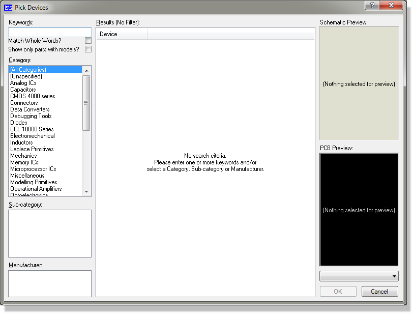
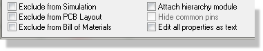
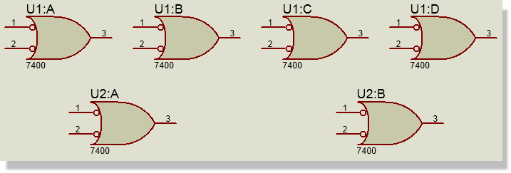
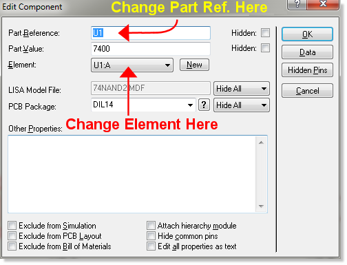
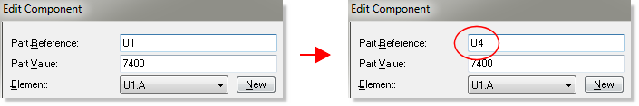
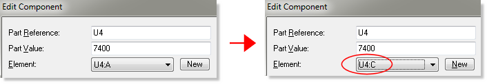
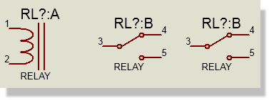
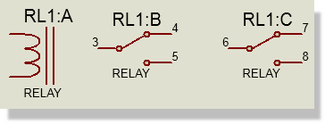
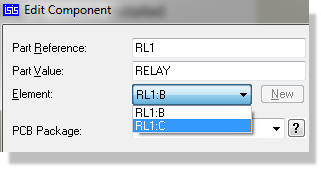
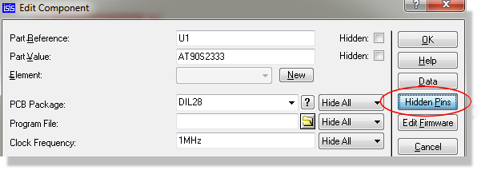

A component is an instance of a device, picked from one of the device libraries. Since some devices are multi-element it follows that in some cases, several components on the schematic may, in fact, all belong to one physical component on the PCB. In such cases, the logical components are annotated with names such as U1:A, U1:B, U1:C, U1:D to indicate that they all belong to the same physical part. This form of annotation also enables Proteus to select the correct set of pin numbers for each element.
Apart from physical terminals, components are the only objects you can place which will generate physical entities in the PCB design. Everything else you place serves either to specify connectivity, or else is present only for the purpose of human readability. This is an important point, since attempts to use other schematic objects (in particular, graphics symbols) to represent objects on the PCB will fail.
When you start on an empty drawing, the device selector is empty. Before you can place any components, you must first pick them from the libraries into the selector.
To select components from the device libraries:

See Also:
Picking Parts from the Library (Tutorial)
Component placement follows the general scheme outlined in Object Placement.
To place a component:
To replace a component:
You can also replace a component by using the Property Assignment Tool with the syntax 'DEVICE=<component_name>' in on-click mode. This may of course result in chaos if the part is wired !
A component may be edited using any of the general editing techniques (see Editing an Object), and also specifically by using the Edit Component command (default keyboard shortcut key 'E'). As with most editing features in PROTEUS a dialogue form will appear with the appropriate editing fields. However, with the Edit Component dialogue form the available fields are dependant on the given properties of the component. You will find, therefore, that this dialogue form can be radically different for different components. Context Sensitive Help is available for the dialogue form but please note that, for the reasons given above, some fields may not have a help topic associated with them.
Having said that, several specific attributes are common to components and can be found at the bottom of the dialogue form. Three in particular are used to exclude the component from various other modules and are discussed below:

When checked the component will not be included for simulation purposes. This should be used for example with connectors which have no meaning in a simulation but are relevant in PCB layout.
When checked the component will not be included for PCB layout purposes. Obvious examples include virtual instruments (e.g. oscilloscope) which is relevant for simulation but clearly not for layout.
When checked the component will not be included in the Bill of Materials. This is useful where you want a single board fabricated that might satisfy scalable product. For example, a lower cost product might not include bluetooth connectivity but would still use the same mainboard as the more expensive variant.
The Edit Component dialogue form also enables gate-swap and re-annotation of multi-element parts. A multi-element part is a single physical parts with several contributing logical elements. The common database deals primarily with parts and it is therefore not possible for elements to supply conflicting data. This is most obviously seen with properties; unlike earlier versions, changing a property in one element will automatically change that property in all of the other elements of the part.
The annotation and swapping of gates in the Edit Component dialogue now works slightly differently. Take the following as an example:

When placed an element reflects both it's part reference (e.g. U1) and it's element identifier (e.g. A). In the edit component dialogue these are now separated into two fields.

Changing the part reference will re-annotate all of the elements. For example, changing U1 to U4 will change all of the U1 elements to U4 elements. You will get a warning if you change this annotation to one that is already in use (for example U2).
Changing the element will swap the current element with the one selected from the combo box. Pressing the new button will change the annotation to the next available element not currently on the schematic.
To re-annotate U1 to U4
Edit one of the U1 elements and change the part reference to U4

To gateswap U4:A with U4:C
Edit the U4:A element and change the element to U4:C.

To annotate a heterogeneous part
If you have a multi-element heterogeneous part such as a relay with a coil and contacts the process is similar to that in previous versions. When you place the elements on the schematic they will be un-annotated as manual annotation is required for heterogeneous parts.

The annotation of each element is of the form
<part ref> : <element>
and is entered in the part reference field of the dialogue. For example, the coil might be annotated as RL1:A and the contacts as RL1:B and RL1:C

Assuming the contacts are identical, you can subsequently gateswap them via the element field of the Edit Component dialogue.

The gateswap will only work if the contacts are instances of the same library part. Since they are identical, you need only one library part, regardless of how many contacts are placed on the schematic.
Components have the following system properties:
| Property Name | Description |
|
REF |
Component Reference designator label. |
|
VAL |
Component value label. |
|
VALUE |
Component value label or the VALUE user property if the assigned text is too long for the label. |
|
DEVICE |
Library part. If assigned, this will invoke the automatic replacement logic which will attempt to maintain connectivity. |
If any other property names (e.g. RoHS, TOLERANCE, etc.) are assigned, then these will create user properties in the component's text block.
See Also:
Bill of Materials (Properties)
Visual Packaging Tool (Properties)
If a component has been defined with hidden power pins, then the nets to which these will be connected can be viewed or edited by clicking the Hidden Pins button on the Edit Component dialogue form as shown below.

The Hidden Pins button on the Edit Component Dialogue Form
By default, hidden pins connect to a net of the same name - for example, a hidden VDD pin will connected to VDD, a hidden VSS pin to VSS and so on.
See Also: